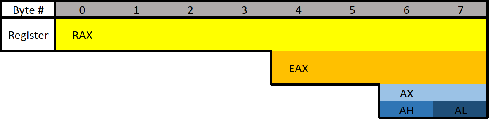

Windows x64 Assembly
What Is Reverse Engineering?Reverse engineering is essentially being given a result and figuring out how it got there. That knowledge can be used to find vulnerabilities in the logic and methods used to achieve the result. It starts with finding what you want to attack, then figuring out how it works, then finally doing what you want with it. For security researchers, the goal of reverse engineering is to find where the developers made a mistake or got lazy.
ToolsThis course won't be dependent on any single tool so use what you want.
x64dbg,
Ghidra, and
SysInternals will be provided on the VMs used in future rooms of this series.
Assembly Language Syntax:Intel - Default for Windows
AT&T - Generally used by Linux
What is a Protocol?TCP, UDP, HTTP(s), FTP, and SMTP are all protocols. Protocols are simply templates that are used to specify what data is where.
Prefixes and Suffixes:To distinguish between different number systems, we use prefixes or suffixes. There are many things used to distinguish between the number systems, I will only show the most common.
1) Decimal is represented with the suffix "d" or with nothing. Examples: 12d or 12.
2) Hexadecimal is represented with the prefix "0x" or suffix "h". Examples: 0x12 or 12h. Another way hexadecimal is represented is with the prefix of "\x". However, this is typically used per byte. Two hexadecimal digits make one byte. Examples: \x12 or \x12\x45\x21. If bits and bytes seem a little weird we'll get into them soon so don't worry.
3) Binary is represented with a suffix "b" or with padding of zeros at the start. Examples: 100101b or 00100101. The padding at the start is often used because a decimal number can't start with a zero.
Bits and Bytes ▪ Bit is one binary digit. Can be 0 or 1.
▪ Nibble is 4 bits.
▪ Byte is 8 bits.
▪ Word is 2 bytes.
▪ Double Word (DWORD) is 4 bytes. Twice the size of a word.
▪ Quad Word (QWORD) is 8 bytes. Four times the size of a word.
Data Type Sizes ▪ Char - 1 byte (8 bits).
▪ Int - There are 16-bit, 32-bit, and 64-bit integers. When talking about integers, it's usually 32-bit. For signed integers, one bit is used to specify whether the integer is positive or negative.
• Signed Int
16 bit is -32,768 to 32,767.
32 bit is -2,147,483,648 to 2,147,483,647.
64-bit is -9,223,372,036,854,775,808 to 9,223,372,036,854,775,807.
• Unsigned Int - Minimum is zero, maximum is twice that of a signed int (of the same size). For example: unsigned 32-bit int goes from 0 to 4,294,967,295. That is twice the signed int maximum of 2,147,483,647, however, its minimum value is 0. This is due to signed integers using the sign bit, making it unavailable to represent a value.
▪ Bool - 1 byte. Interestingly, a bool only needs 1 bit because it's either 1 or 0 but it still takes up a full byte. This is because computers don't tend to work with individual bits due to alignment (talked about later). So instead, they work in chunks such as 1 byte, 2 bytes, 4 bytes, 8 bytes, and so on.
OffsetsData positions are referenced by how far away they are from the address of the first byte of data, known as the base address (or just the address), of the variable. The distance a piece of data is from its base address is considered the offset. For example, let's say we have some data, 12345678. Just to push the point, let's also say each number is 2 bytes. With this information, 1 is at offset 0x0, 2 is at offset 0x2, 3 is at offset 0x4, 4 is at offset 0x6, and so on. You could reference these values with the format BaseAddress+0x##. BaseAddress+0x0 or just BaseAddress would contain the 1, BaseAddress+0x2 would be the 2, and so on.
RegistersC Program Equivalent:
if(x == 4){
func1();
}else{
return;
}
Example of Assembly:
mov RAX, x
cmp RAX, 4
jne 5 ; Line 5 (ret)
call func1
ret
This should be fairly self-explanatory, but I'll go over it briefly. First, the variable x is moved into RAX. RAX is a register, think of it as a variable in assembly. Then, we compare that with 4. If the comparison between RAX (4) and 5 results in them not being equal then jump (jne) to line 5 which returns. Otherwise, they are equal, so call func1().
Let's talk about General Purpose Registers (GPR). You can think of these as variables because that's essentially what they are. The CPU has its own storage that is extremely fast. This is great, however, space in the CPU is extremely limited. Any data that's too big to fit in a register is stored in memory (RAM). Accessing memory is much slower for the CPU compared to accessing a register. Because of the slow speed, the CPU tries to put data in registers instead of memory if it can. If the data is too large to fit in a register, a register will hold a pointer to the data so it can be accessed.
There are 8 main general-purpose registers:There are several GPR's, each with an assigned task. However, this task is more of a template as registers are usually used for whatever, except for a few. Regardless, it's good to know their assigned purpose for when they are used according to their designation.
RAX - Known as the accumulator register. Often used to store the return value of a function.
RBX - Sometimes known as the base register, not to be confused with the base pointer. Sometimes used as a base pointer for memory access.
RDX - Sometimes known as the data register.
RCX - Sometimes known as the counter register. Used as a loop counter.
RSI - Known as the source index. Used as the source pointer in string operations.
RDI - Known as the destination index. Used as the destination pointer in string operations.
RSP - The stack pointer. Holds the address of the top of the stack.
RBP - The base pointer. Holds the address of the base (bottom) of the stack.
The Instruction PointerRIP is probably the most important register. RIP is the "Instruction Pointer". It is the address of the next line of code to be executed. You cannot directly write into this register, only certain instructions such as ret can influence the instruction pointer.
Register Break Downs
Each register can be broken down into smaller segments which can be referenced with other register names. RAX is 64 bits, the lower 32 bits can be referenced with EAX, and the lower 16 bits can be referenced with AX. AX is broken down into two 8 bit portions. The high/upper 8 bits of AX can be referenced with AH. The lower 8 bits can be referenced with AL.
Different Data Types•
Floating Point Values - Floats and Doubles.
•
Integer Values - Integers, Booleans, Chars, Pointers, etc.
Different data types can't be put in just any register. Floating-point values are represented differently than integers. Because of this, floating-point values have special registers. These registers include
YMM0 to YMM15 (64-bit) and
XMM0 to XMM15 (32-bit). The XMM registers are the lower half of the YMM registers, similar to how EAX is the lower 32 bits of RAX. Something unique about these registers is that they can be treated as arrays. In other words, they can hold multiple values. For example, YMM# registers are 256-bit wide each and can hold 4 64-bit values or 8 32-bit values. Similarly, the XMM# registers are 128-bits wide and can hold 2 64-bit values or 4 32-bit values. Special instructions are needed to utilize these registers as vectors.
Extra RegistersThere are additional registers that should be mentioned. These registers don't have any special uses. There are registers
R8 to R15 which are designed to be used by integer type values (not floats or doubles). The lower 4 bytes (32 bits), 2 bytes (16 bits), and 8 bits (1 byte) can all be accessed. These can be accessed by appending the letter "d", "w", or "b".
Examples:
• R8 - Full 64-bit (8 bytes) register.
• R8D - Lower double word (4 bytes).
• R8W - Lower word (2 bytes)
• R8B - Lower byte.
{kind=link}